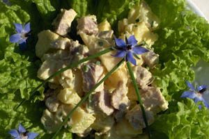

Aardappelsalade met varkensvlees
Ingrediënten (voor 4 personen)
- 750 g aardappelen
- 200 g gebakken varkensvlees, koud
- 1 appel
- augurkjes
- uitjes
- pijpajuin
- tuinkruiden
- vinaigrette of mayonaise
Bereiding
- Kook de aardappelen en laat ze afkoelen.
- De tomaten wassen en in vieren snijden.
- Snij het varkensvlees in blokjes.
- Schil de appel en snij deze ook in blokjes.
- Hak de tuinkruiden, de pijpajuin, de augurkjes en de uitjes fijn.
- Meng alle ingrediënten en voeg een vinaigrette of mayonaise toe.